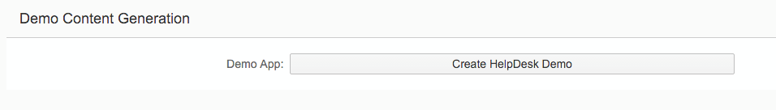
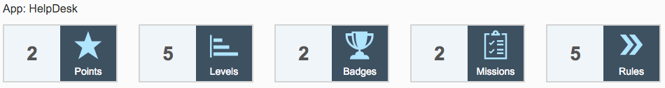

Generate Demo Content for HelpDesk
Prerequisites
You have logged into the
SAP Cloud Platform
cockpit with your SCN user and password.
You have the role
TenantOperator
.
Procedure
In the
SAP Cloud Platform
cockpit, choose the
Services
tab.
Go to
Gamification Service
and press the
Go to Service
icon. The gamification workbench is opened.
Go to tab
Operations
.
Go to
Data Management
and click on
Create HelpDesk Demo
.

After a while, you will see a notification: “Gamification concept successfully created.”
Switch to the
HelpDesk
application by using the dropdown box in the upper right corner.
Go to the
Summary
tab to check if all game mechanics are available.
